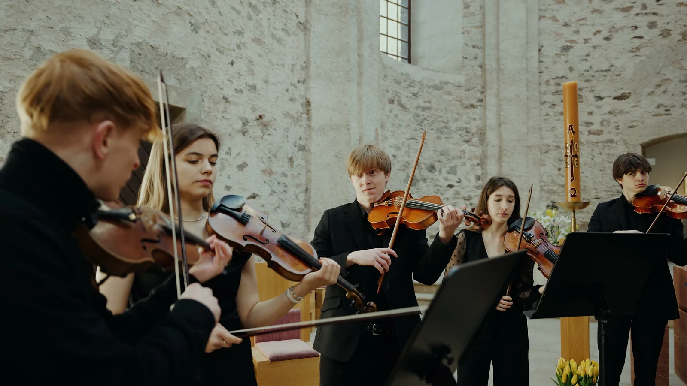
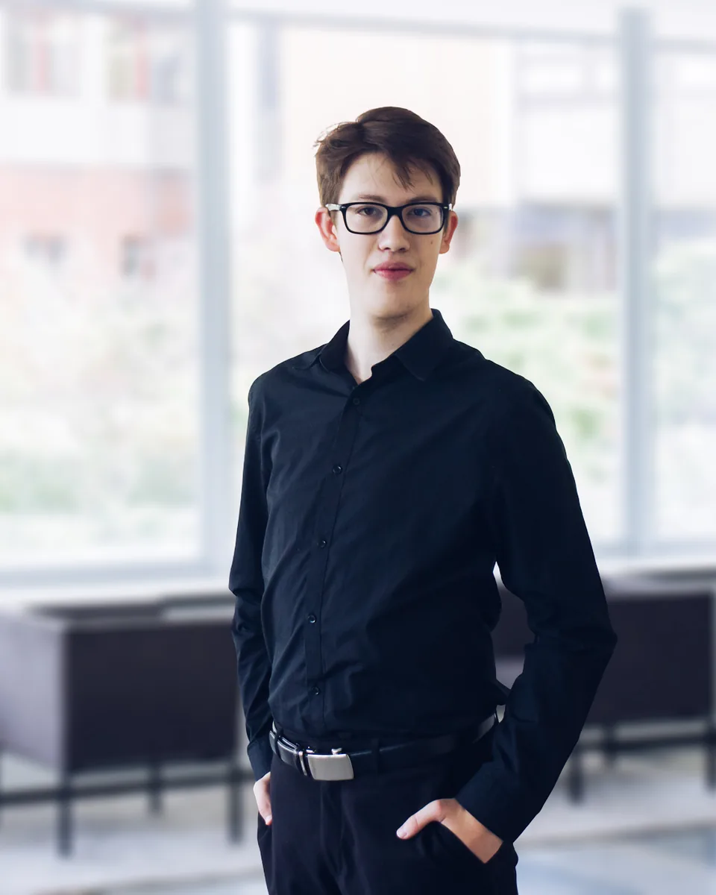
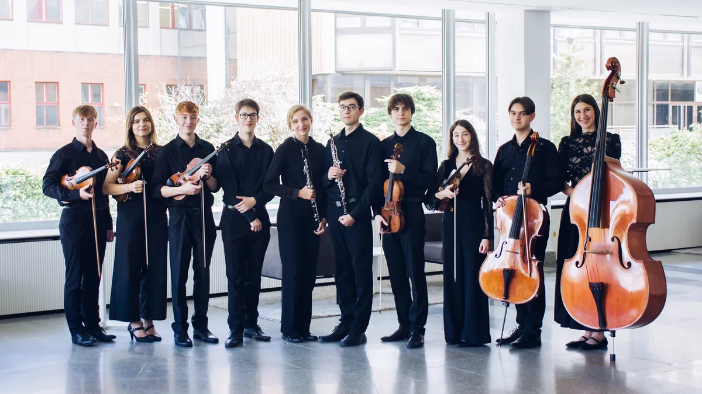

The ensemble
Members
Eleven players and an artistic supervisor, mostly students and graduates of the Pardubice Conservatory.

Artistic director
Adam Suk
Harpsichord
Adam Suk (b. 2005) is a Czech organist and harpsichordist. Since 2021 he has been studying at the Pardubice Conservatory in the organ class of Pavel Svoboda. Since 2024 he has been a member and the artistic director of the Baroque ensemble Capella Nostra, made up mostly of students and graduates of the Pardubice Conservatory.
In June 2026 he was among the first organists to play the new organ of St Vitus Cathedral. As part of the St Vitus Organ Octave, he performed Janáček’s Glagolitic Mass with the National Theatre Orchestra.
Full biographyHide biography
He has won awards at many music competitions. In 2019 he received first prize in the junior category of the Northern Ireland Organ Competition. His other successes include first prize at the Organum Regium competition, second place at the competition in Rumia, Poland (2021), and the title of overall winner at the Pro Bohemia competition in Ostrava and at the J. K. Vaňhal Competition, held on the historic organ in Opočno (2023).
In August 2024 he was selected as one of thirteen organists from around the world to take part in the senior category of the Northern Ireland International Organ Competition, where he received a special award – the Dame Gillian Weir Medal – for his interpretation of the Finale from Petr Eben’s Sunday Music.
He regularly takes part in masterclasses led by renowned organists such as Jaroslav Tůma, Martin Schmeding, Nathan Laube, Thomas Ospital, Zuzana Ferjenčíková, Monika Melcová, Christoph Mantoux and Krzysztof Urbaniak.
In December 2022 he released his first CD (Adam Suk – Organ Recital), recorded on the organ of the Church of the Assumption of the Virgin Mary in Brno. His second CD, built mainly around organ concertos by Poulenc and Brixi, was recorded in 2025 with the Pardubice Chamber Philharmonic and conductor Stanislav Vavřínek. It will be released in November 2026.
He also performs widely in concert and has appeared at many festivals, including Pardubice Music Spring, Zlatá Pecka, the F. L. Věk Festival, Vivat varhany, the Dvořák Festival, the J. C. F. Fischer Festival, the EuroArt Festival and Mladá Praha at the Rudolfinum.
He has worked with ensembles and orchestras such as Barocco sempre giovane, the Hradec Králové Philharmonic, the Czech National Symphony Orchestra, the Pardubice Chamber Philharmonic and the North Czech Philharmonic Teplice.
Ensemble leadership
Players

For organisers
Would you like Capella Nostra at your event?
We play in churches and at festivals. Tell us when and where you are planning the concert. We will get back to you and agree on the programme together.
- Phone
- +420 702 871 260Michael Stehno, ensemble manager
- capellanostra@gmail.com